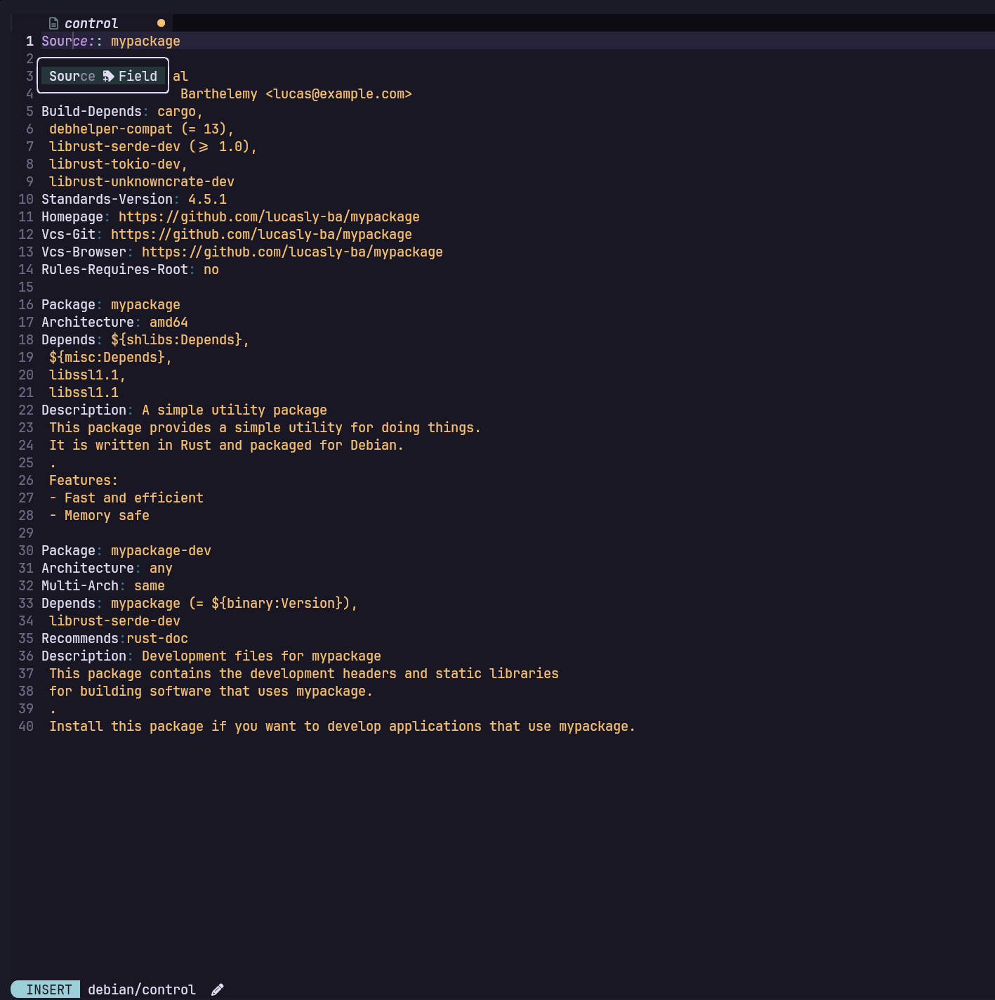

debian-lsp
A Language Server Protocol implementation for Debian packaging files — my Google Summer of Code 2026 project with Debian, mentored by Jelmer Vernooij.
Overview
Debian packaging is driven by a family of metadata files — debian/control, debian/tests/control, debian/*.lintian-overrides, debian/conffiles, debian/install and many more. debian-lsp brings modern editor intelligence to those files over the Language Server Protocol, so any LSP-capable editor gets first-class support for editing Debian packages: completions, diagnostics, hover, go-to-definition, semantic highlighting and code actions.
The project was started by Jelmer Vernooij, my mentor and a long-time Debian developer. I joined it through Google Summer of Code 2026 and have been working alongside him on it since — accepted as one of the 1,141 contributors selected worldwide out of 15,245 applicants. Getting deep into the codebase also meant navigating several other Debian Rust crates it builds on (the deb822 parsing/format stack, the lintian-brush fixers, the package and architecture caches).

Source field in debian/control — running in Helix.Editor support
Because it speaks the Language Server Protocol, debian-lsp is editor-agnostic. As part of the work I got it running in Helix and Emacs (via eglot) in addition to the existing setups — wiring up the language-server configuration so Debian maintainers on those editors get the same completions, diagnostics and hover.
Before GSoC
Before the official coding period began I was already contributing: I implemented support for debian/patches/series (go-to-definition from a patch name to the patch file in the tree, plus completion) — which isn't on the timeline below — and fixed a number of other issues across the existing code while learning my way around the codebase and its sibling crates.
The plan — timeline
The 175-hour project is scoped file-type by file-type. Each week takes on a packaging file (or a related cluster) and brings it up to the full feature set — completions, go-to-definition, hover, diagnostics, semantic tokens and code actions where they apply.
| Period | Module | Will achieve | Perhaps achieve | Stretch / extend |
|---|---|---|---|---|
| Week 1 | tests/control | Completions · Go-to-definition · Hover · Docs | Code lens · Code actions | Diagnostics |
| Week 2 | lintian-overrides | Parser rework · Completions · Go-to-definition · Docs | Code actions | Diagnostics |
| Week 3 | conffiles · dirs | Completions · Diagnostics · Semantics · Docs · Code actions | ||
| Week 4 | install · diagnostics | install support · tests & lintian-overrides diagnostics · tidy earlier work | ||
| Week 5 | manpages | Support + cleanup | ||
| Week 6 | menu | Support | ||
| Week 7 | triggers · not-installed | Support | ||
| Week 8 | debcargo.toml | Support | ||
| Week 9 | wrap-up | Tidy everything · mentor review · GSoC final report |
Week 1 — debian/tests/control
DEP-8 autopkgtest control files. Full deb822-style intelligence driven by the shared parser:
- Field completions for all known fields —
Tests,Test-Command,Depends,Restrictions,Features,Architecture,Classes,Tests-Directory. - Value completions: known DEP-8 restrictions and features (space-separated, de-duplicated); a lazy one-level directory scan for
Tests-Directory; executable test files forTests(respectingTests-Directory); async package-cache completions plus the@/@builddeps@/@recommends@substitution variables forDepends; and the known architecture list forArchitecture. - Go-to-definition: a test name jumps to its executable in the tests directory; a package in
Dependsresolves to its binary paragraph indebian/control(reusing the existing control logic);Tests-Directoryopens the referenced folder. - Hover on a known field shows its documentation, via the shared deb822 hover logic.
Week 2 — debian/*.lintian-overrides
Lintian override lines have the shape [[<package>][ <archlist>][ <type>]: ]<lintian-tag>[[*]<context>[*]]. The work:
- Parser improvement: emit a partial
PACKAGE_SPECnode even without the trailing:, so completion can walk the CST for the current spec context (package / arch list / type) without a separate partial-text parser. - Completions for package names (binary & source from
debian/control), architectures (with wildcards and negations), override types (source,binary,udeb), and lintian tags. - Go-to-definition from a package name to its
Package:/Source:paragraph. - Hover: tag descriptions (from
lintian-explain-tags), whether a package is defined indebian/control, architecture-restriction notes (with negation), and per-type descriptions.
Week 3 — debian/conffiles & debian/dirs
- conffiles — completion by scanning
debian/<package>/etc/for absolute paths and offering theremove-on-upgradeflag; diagnostics for empty lines, relative paths, unknown flags, duplicate entries, too many tokens, andremove-on-upgradeon a file that still exists (whichdpkg-debrefuses to build); hover and semantic tokens (paths as values, the flag as a keyword). - dirs — completion of common directory prefixes (
usr/share/,usr/lib/,usr/bin/,etc/,var/lib/) and a duplicate-entry warning.
Week 4 — debian/install & diagnostics
- install — source-path and destination-prefix completion; go-to-definition from a source path to the file in the tree (same pattern as
patches/series); diagnostics for missing sources, leading-slash destinations, duplicates and malformed lines; hover and semantic tokens. - Diagnostics for
tests/controlandlintian-overrides. Several of these are implemented as lintian-brush fixers rather than directly in the LSP — so command-linelintian-brushusers benefit too — and the LSP surfaces them automatically as diagnostics and quick-fixes (e.g. a listed test that doesn't exist or isn't executable, a missingTests-Directory, and field-casing warnings).
Documentation is updated as each module lands: the README grows a section per file type covering its completions, diagnostics, go-to-definition and hover.